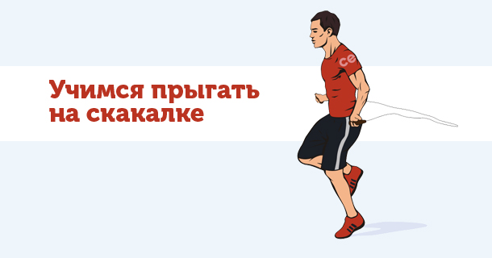
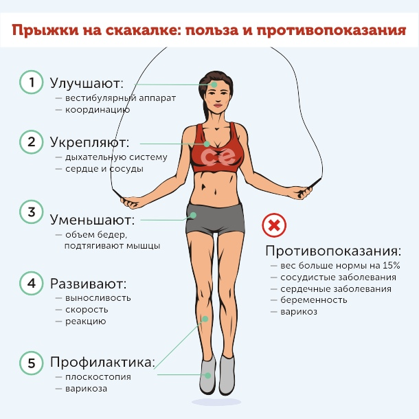

Прыжки на скакалке
Прыжки на скакалке – один из наиболее распространенных вариантов кардио-нагрузки, применяемый, как для похудения, так и для улучшения функциональных качеств атлета. Их используют практически в каждом виде спорта: фитнесе, единоборствах, кроссфите и многих других.
Это знакомое всем с детства упражнение позволяет потратить огромное количество калорий, улучшить координацию и анаэробную выносливость и увеличить общую интенсивность тренировки и любого функционального комплекса. Именно поэтому мы и рекомендуем взять это нехитрое (на первый взгляд) упражнение на вооружение и почаще вносить его в свой тренировочный процесс.
В этой статье мы расскажем о том, чем полезны прыжки на скакалке, рассмотрим правильную технику выполнения прыжков и дадим некоторые практические рекомендации.
Польза прыжков на скакалке
Польза этого упражнения очевидна:
- вы становитесь гораздо выносливее;
- тратите большое количество калорий;
- сбрасываете лишний вес;
- улучшаете рельеф мышц;
- развиваете ловкость и координацию;
- разгоняете метаболизм.
Кроме того, подобная кардио-тренировка со средней интенсивностью очень полезна для работы сердечно-сосудистой системы, так как благодаря ней нормализуется артериальное давление и тренируется равномерный ритм дыхания. Работа с умеренно повышенной частотой сердечных сокращений (около 120 ударов в минуту) делается Вашу сердечную мышцу сильнее и выносливее. Ей становится намного проще справляться со всем объемом нагрузки на тренировках.
Вред и противопоказания
Однако, не всем спортсменам прыжки со скакалкой а приносят одну лишь пользу. Чрезмерная нагрузка, направленная на развитие выносливости, может нанести вред сердечно-сосудистой системе. Речь идет о максимальной и субмаксимальной нагрузке. При таком стиле тренинга частота сердечных сокращений превышает все допустимые значения, и ни о какой пользе для здоровья речи здесь уже идти не может.
При таких заболеваниях весь тренировочный график должен строиться на рекомендациях специалиста. Без должного контроля со стороны вы можете запросто навредить своему здоровью, поэтому будьте осторожны, используя прыжки со скакалкой.
Помимо лиц, имеющих проблемы с сердечно-сосудистой системой, прыжки на скакалке не рекомендованы к выполнению спортсменам, у которых так или иначе повреждены суставы и связки коленей, стоп или голеностопа. Например, не следует налегать на это упражнение, если у вас было, к примеру, растяжение связок колена или перелом плюсневых костей – это чревато болевыми ощущениями, а в некоторых случаях и рецидив травмы.
Не рекомендуют активно прыгать спортсменам с варикозным расширением вен. Вообще, варикоз – профессиональное заболевание у посетителей тренажерных залов. Часто его очагом являются икроножные мышцы. А основная нагрузка во время прыжков со скакалкой приходится именно на них.
Как правильно выполнять:
Само собой, для достижения оптимального результата первостепенна техника прыжков на скакалке. Особенных технических тонкостей тут на первый взгляд нет:
- приземляемся на носочки;
- спину держим прямой, а локти прижимаем близко к корпусу;
- крутим кистями синхронно со скакалкой;
- работаем в одной скорости;
- стараемся поддерживать одинаковый темп дыхания.
Но все просто только на протяжении первых 50-100 повторений. После этого для неподготовленного спортсмена начинается настоящий кошмар. Ноги подкашиваются, пот заливает глаза, икроножные мышцы забиваются, нормально прыгать становится просто невозможно. Спортсмен начинает постоянно бить себя по голеням скакалкой, темп сбит напрочь. Именно поэтому технику нужно отрабатывать постоянно. Тогда у вас не будет таких проблем, а занятия кроссфитом будут проходить намного продуктивнее, и прыжки на скакалке будут даваться легче с каждой тренировкой.